Report Core
Shared report shell, registry, ACL, exports, chart foundation and scheduled email infrastructure.
PPL Reports answer operational questions inside Magento: how revenue is moving, which SKUs matter, which coupons cost money, where search returns nothing, which products need content review and which orders or payment methods need handoff.
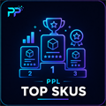
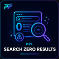
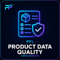
Each report is intentionally specific, so merchants can install what they need without building a custom BI project for every operational question.
Shared report shell, registry, ACL, exports, chart foundation and scheduled email infrastructure.
Revenue, order count and average order value for selected periods with trend display and CSV export.
Identify the SKUs driving orders, quantity, revenue and AOV in the selected period.
Review coupon use, discount cost and promotion impact with exportable data.
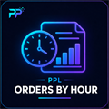
Understand hourly order distribution for staffing, fulfillment timing and traffic review.
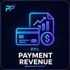
Group revenue by payment method to compare payment performance and operational risk.
Surface catalog records that need images, content, attributes or merchandising review.
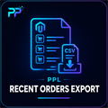
Prepare recent order data for CSV download and operational handoff.
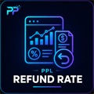
Compare revenue, refunds and refund percentage to spot return pressure.
Find terms that returned no products so synonyms, content and catalog coverage can improve.
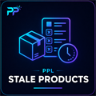
Highlight products with weak freshness or sales signals for review, export or cleanup.
Email digest for selected report values and regular admin review.
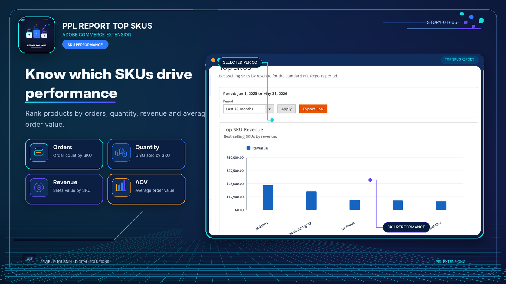
Use SKU performance as a buying, inventory and merchandising starting point.
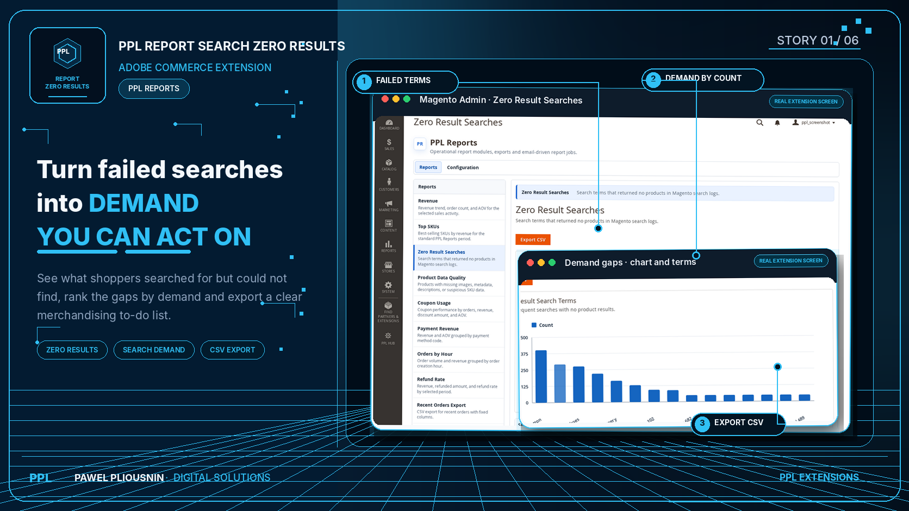
Turn no-result searches into synonym, content or assortment tasks.
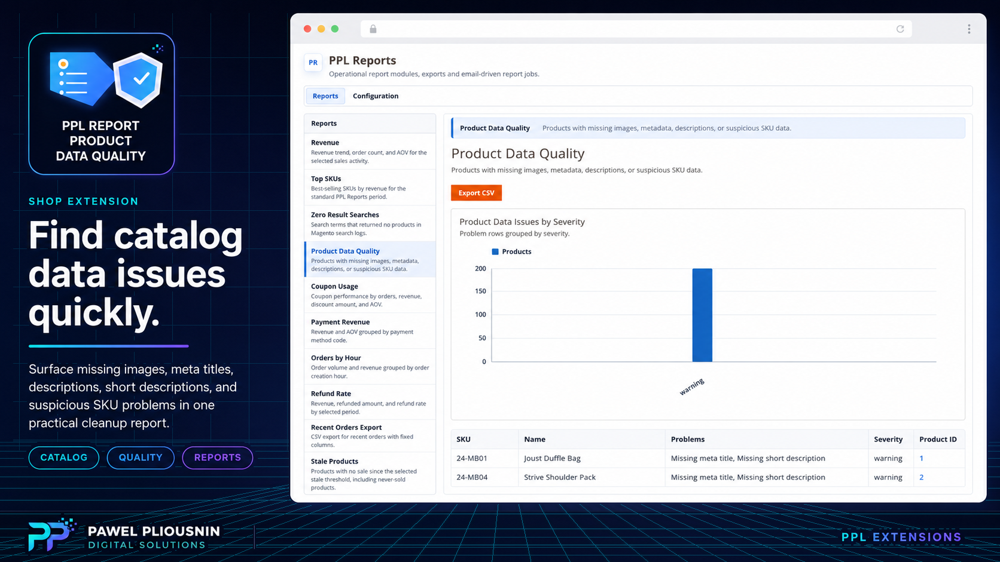
Review weak product data before it hurts search, merchandising or conversion.